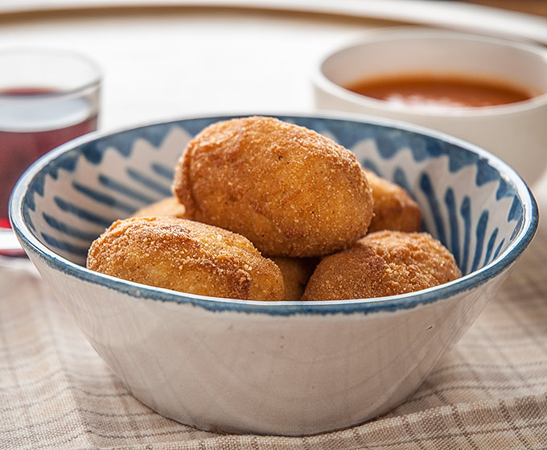

Croquetas caseras de jamón
Ingredientes
- 100 g de jamón serrano picado
- 80 g de mantequilla
- 80 g de harina
- 1 litro de leche
- Nuez moscada y sal
- Huevo y pan rallado para rebozar

Pasos a seguir
- Derrite la mantequilla en una sartén y sofríe el jamón un par de minutos.
- Añade la harina y tuéstala removiendo durante 2 minutos.
- Vierte la leche poco a poco, sin dejar de remover, hasta obtener una bechamel espesa.
- Sazona con sal y nuez moscada y deja enfriar la masa en la nevera unas 4 horas.
- Forma las croquetas, pásalas por huevo batido y pan rallado.
- Fríelas en aceite bien caliente hasta que estén doradas.
Descargar la receta en PDF
Volver al menú principal del restaurante